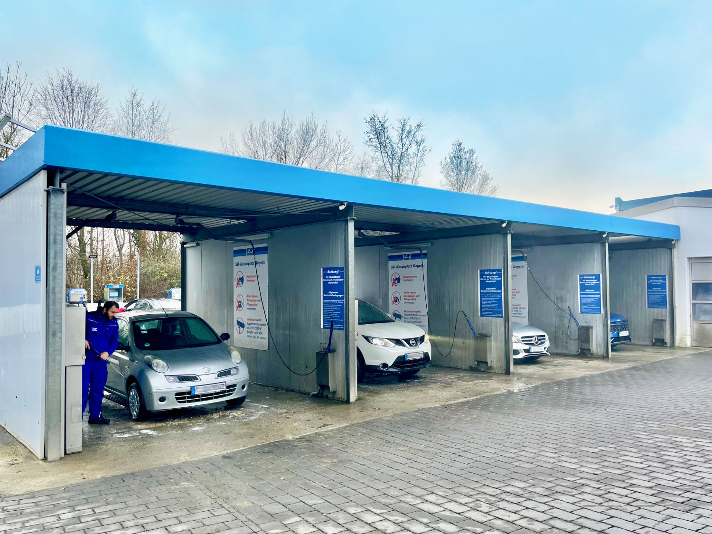
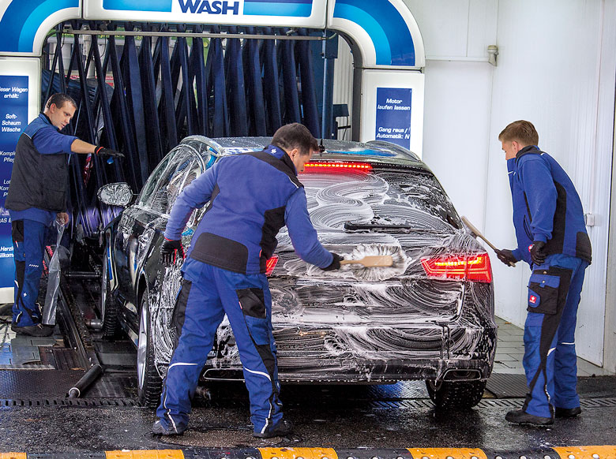

Ratgeber
Was ist die beste Autowäsche? Handwäsche, SB-Box und Textil-Waschstraße im Vergleich
Eine der häufigsten Fragen rund um die Autopflege: Was reinigt ein Fahrzeug wirklich am besten – die eigene Handwäsche, eine Selbstbedienungs-Waschbox oder die klassische Waschstraße? Gängige Empfehlungen, etwa vom ADAC, laufen auf dieselbe Antwort hinaus: Am besten schneidet eine gründliche Handwäsche an einer gepflegten SB-Waschbox ab – oder die Fahrt durch eine gepflegte Textil-Waschstraße mit manueller Vorwäsche. Beide Wege haben ihre Berechtigung, und beide bietet TOP WASH an.

Option 1: Handwäsche an der SB-Waschbox
Wer selbst Hand anlegt, hat die größte Kontrolle: über Reinigungsmittel, Wassermenge und wie gründlich einzelne Problemstellen bearbeitet werden. Eine SB-Waschbox bietet dafür das beste Preis-Leistungs-Verhältnis unter den Selbstbedienungs-Optionen. Entscheidend ist dabei die Sauberkeit der bereitgestellten Bürsten – verschmutzte Bürsten wirken wie Schleifpapier und können feine Lackkratzer verursachen. Am TOP WASH-Standort Bad Nauheim stehen dafür vier überdachte SB-Waschboxen bereit, in denen Sie mit verschiedenen Waschmodi und Hochdruckreinigern komplett selbst von Hand nachbearbeiten können. Mehr zu den SB-Waschboxen →

Option 2: Eine gepflegte Textil-Waschstraße mit manueller Vorwäsche
Moderne Waschstraßen mit textilen Lamellen statt harter Kunststoffbürsten sind deutlich lackschonender als ältere Anlagen – der sogenannte Schmirgel-Effekt (feine Kratzer durch eingeschlossenen Schmutz) lässt sich damit erheblich reduzieren. Entscheidend ist dabei vor allem eines: eine gründliche Handvorwäsche, bevor das Fahrzeug in die eigentliche Waschstraße einfährt. Bei TOP WASH reinigen Mitarbeitende deshalb zuerst die Felgen kostenlos von Hand, tragen einen Schmutzlöser auf und spülen groben Schmutz mit dem Hochdruckreiniger ab – erst danach folgen die drei Textilwäsche-Stufen. Mehr zum Schmirgel-Effekt →
Die TOP WASH-Antwort: Beide Wege an einem Standort
Statt sich zwischen beiden Optionen entscheiden zu müssen, lassen sie sich bei TOP WASH kombinieren: die professionelle Textilwäsche mit Handvorwäsche an allen 4 Standorten in Rhein-Main, plus die SB-Waschboxen für die eigene Nacharbeit in Bad Nauheim – unabhängig vom zuvor gewählten Waschprogramm nutzbar. Mehr zum Ablauf auf der Startseite →